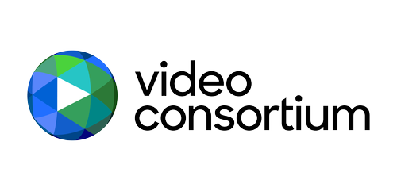
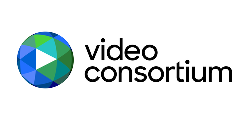

Who We Are
Liz Kelly Nelson
Co-Founder | Founder, Project C
Liz developed Project C — a thriving community of 160+ creator-journalists with deep expertise in business models, platforms, and practices defining this space — during a 2024 Sulzberger Fellowship at Columbia Journalism School, building on experience leading teams at Vox, USA Today, Gannett, and AOL. Liz sits on the board of Stanford University's JSK Fellowship, advises Beehiiv Media Collective and is 2025-2026 Terker Fellow at GWU's School of Media and Public Affairs.
Justin Bank
Co-Founder | Principal, Better Media Studios
Justin has spent 20 years leading digital innovation at major news organizations: The Washington Post (Managing Editor, first SEO editor, built audience engagement teams), The New York Times (founded Audience Development team post-Innovation Report), NPR (Senior Director of Digital News and Strategy).
He is a principal at Better Media Studios which is building better media products within the burgeoning creator economy and regularly contributes to Project C.
Striving to make this world a better place, and bending the internet back towards that ideal.
Ryan Y. Kellett
Co-Founder | Audience Futurist
Ryan Y. Kellett is a consultant and former news executive focused on the intersection of audience behavior, platform dynamics, and sustainable news business models. He advises newsrooms and media organizations on artificial intelligence, creator/influencer strategy, and audience growth. He teaches content creation at Harvard University's Extension School and is an affiliate of Harvard's Berkman Klein Center. Ryan previously held executive roles at Axios Media and The Washington Post, where he pioneered creator-style journalism within institutional settings and helped shape the modern audience engagement discipline. He's also a co-founder of Going Solo, an online course for traditional journalists making the transition to creator journalism.
James Bareham
Design Lead
Partners
.webp)

 


Partner With Us
We're looking for organizations, platforms, and funders who want to build alongside creator journalists. Whether you're a local newsroom exploring creator partnerships, a platform seeking to support independent journalism, or a funder investing in media infrastructure, we'd love to explore how we can work together.
How We're Funded
The Journalism Atlas was bootstrapped to launch by our founding team—Ryan, Justin, and Liz. Today, we operate with a mix of philanthropic support, media partnerships, and strategic commercial collaborations.
Our funding model will evolve as we grow, but our principles won't: we don't take special interest money, we maintain full editorial independence, and we're transparent about who funds our work. No funder influences what we map, how we research, or what we publish.